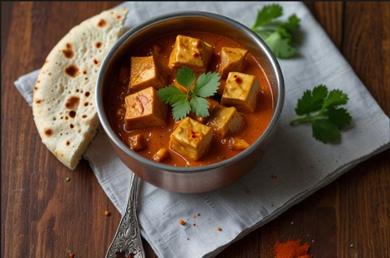

The Odin Recipes!
Paneer Tikka Masala

Description
Paneer Tikka Masala is a rich and creamy North Indian curry made with grilled paneer cubes cooked in spicy tomato gravy. It is one of the most famous vegetarian dishes served in Indian restaurants.
The paneer pieces are marinated with yogurt and spices before being roasted or grilled. This gives the dish a smoky flavor and soft texture. The creamy gravy perfectly balances the spices.
Paneer Tikka Masala is commonly enjoyed with naan, roti, or jeera rice. It is a favorite dish for family dinners and special occasions.
Ingredients
- 250 grams paneer cubes
- 1 cup yogurt
- 1 onion chopped
- 2 tomatoes pureed
- Ginger garlic paste
- 1 teaspoon turmeric powder
- 1 teaspoon garam masala
- 1 teaspoon red chili powder
- Fresh cream
- Butter
- Salt to taste
Steps
- Marinate paneer with yogurt and spices for 30 minutes.
- Grill or roast paneer pieces until slightly charred.
- Heat butter in a pan.
- Add onions and cook until golden.
- Add ginger garlic paste and tomato puree.
- Add spices and cook the gravy properly.
- Add grilled paneer cubes.
- Mix fresh cream into the curry.
- Garnish with coriander and serve hot.
Back to Home